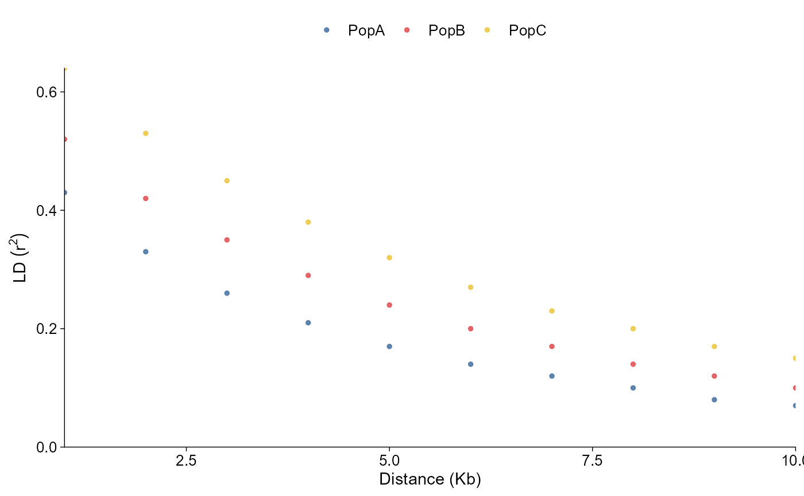
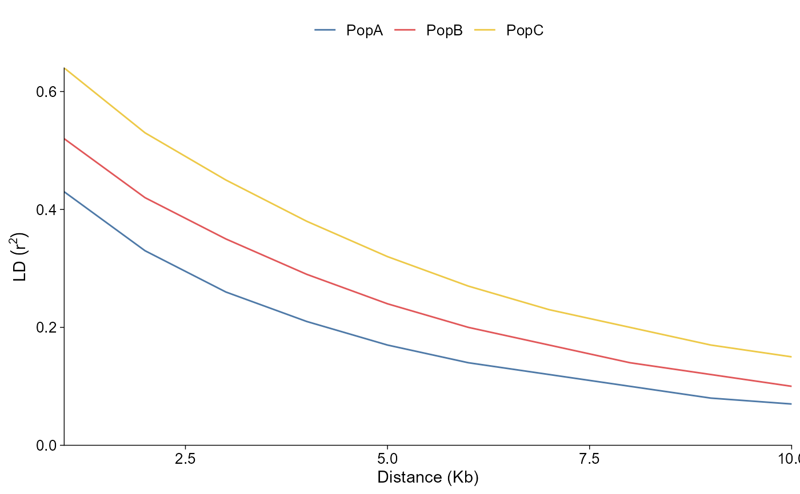

Import LD decay results
import_ld_decay.RdImport LD decay summaries into a typed tidy object for use with plot_ld_decay() or ggpop() + geom_ld_decay(). PopLDdecay *.stat.gz and *.bin.gz files are read directly. PLINK pairwise *.ld files are summarized into distance bins.
Arguments
- dir
Directory containing LD decay result files.
- ...
Optional named file paths. Relative paths are resolved inside
dir.- type
Input type. Supports
"poplddecay"and"plink".- pop
Optional sample or group labels for input files. A scalar is recycled across files; a vector is matched to file order.
- pop_group
Optional population group table or path to the standard two-column
sample popfile. File labels are matched throughsample.- method
Binning method for PopLDdecay summaries and PLINK pairwise LD tables.
"MeanBin"matches the common PopLDdecay summary plot;"MedianBin"and"PercentileBin"use pair-count weighted quantiles.- bin1
Short-distance bin width in base pairs.
- bin2
Long-distance bin width in base pairs.
- breakpoint
Distance threshold that switches from
bin1tobin2.- percent
Percentile used by
"PercentileBin".- bin_size
Legacy alias for a single bin width. When supplied,
methodis treated as"MeanBin"and both bin widths use the same size.
Value
A ggpop_ld_decay tidy S3 data frame with standardized columns including dist, dist_kb, r2, pop, and n_pairs.
Details
Population grouping follows the package-wide convention: pop_group is the standard two-column sample pop table used by PCA and admixture workflows. LD decay file labels are stored as sample_id; when pop_group is supplied, matching labels are mapped to pop.
The plotting helpers then summarize mapped LD decay rows by population label so point and line layers stay population-specific after relabeling.
Examples
ld_dir <- system.file("extdata", "ld_decay", "PopLDdecay_grouped", package = "ggPopi")
groups <- system.file("extdata", "pop_group.txt", package = "ggPopi")
ld <- import_ld_decay(ld_dir, type = "poplddecay", pop_group = groups)
ld |> plot_ld_decay(style = "point")

ld |> plot_ld_decay(style = "line")
